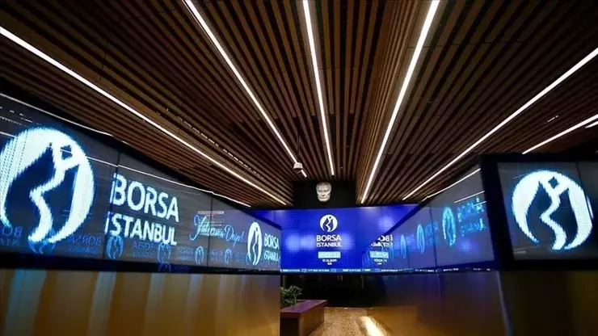
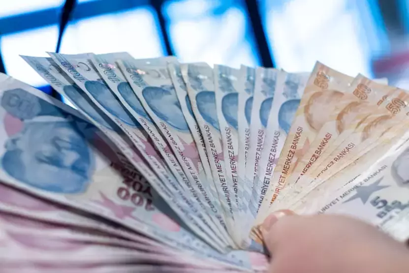

1- Borsa İstanbul haftanın ikinci işlem gününe yatay seyirle başladı
Açıklama:KÜRESEL PİYASALARDA KARIŞIK SEYİR Küresel piyasalarda, ABD'den gelen ekonomik veriler ve Çin'in Nvidia hakkında açtığı tekelleşme soruşturması, karışık bir hava yaratmış durumda. ABD'deki enflasyonla ilgili endişeler, enflasyonu düşürmenin beklenenden daha fazla zaman alacağına dair beklentileri artırırken, Çin'in Nvidia'ya yönelik hamlesi de piyasaları etkileyen önemli bir gelişme oldu.
2- Altın fiyatlarında Çin etkisi! Yatırımcısı merakta... Düşecek mi, yükselecek mi?
Açıklama:Çin ekonomisinin güçlenmesine yönelik yeni teşvik paketlerinin duyurulması, altının değer kazanmasına yol açtı.
3- Asgari ücret maratonu başlıyor: İlk toplantı bugün
Açıklama:Son dakika haberine göre; Milyonlarca çalışanın merakla beklediği asgari ücrette ilk toplantı bugün saat 16.00'da Çalışma ve Sosyal Güvenlik Bakanlığı'nda olacak.
